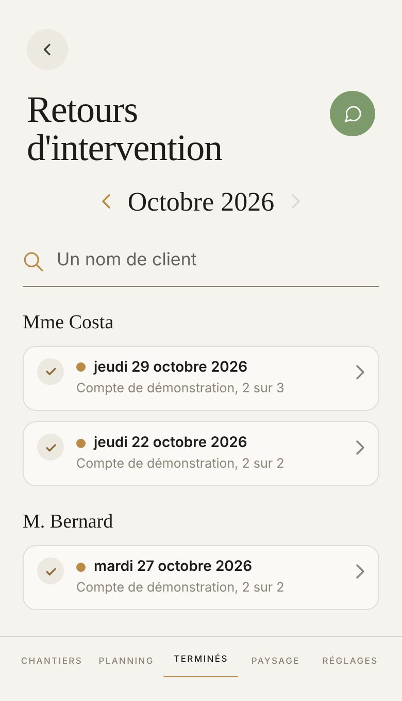

Proposé
Aujourd'hui

Ce qui change
- Chaque retour porte son jour en grand à gauche ; l'année ne se répète plus, le mois du haut la dit.
- « 2 sur 3 » devient « 2 tâches sur 3 ».
- Un retour qui a quelque chose à signaler le dit dès la liste, sans l'ouvrir.
- Ouvert, une tâche faite a son rond vert, une tâche pas faite le mot « Pas fait » en ambre ; ce qui est à signaler, sa plage ambre.
- Les cartes bordées deviennent des plages, rangées par client avec le nombre de retours.
Ce qui ne bouge pas
- Le mois et ses deux flèches, la recherche d'un client, le rangement par client.
- Le point d'or d'un retour pas encore lu, qui s'éteint quand on l'ouvre.
- L'ouverture sur place, les photos en deux colonnes, Replier.